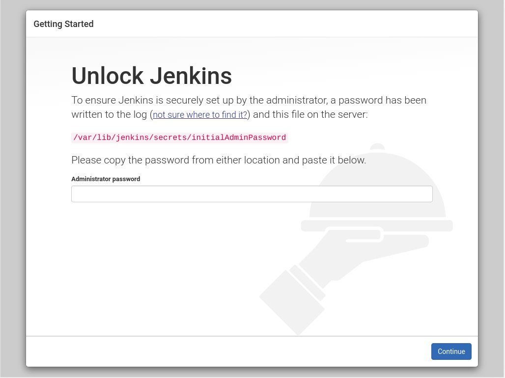
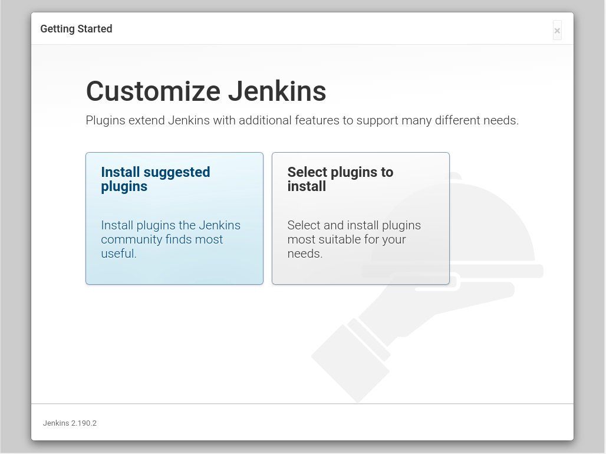
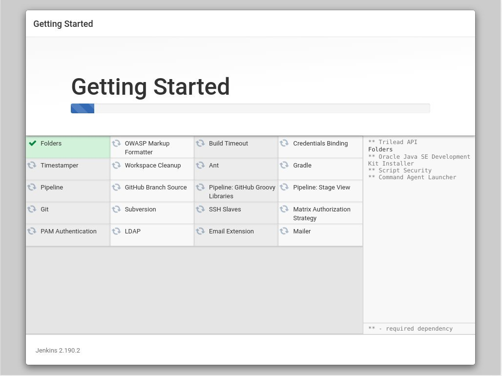
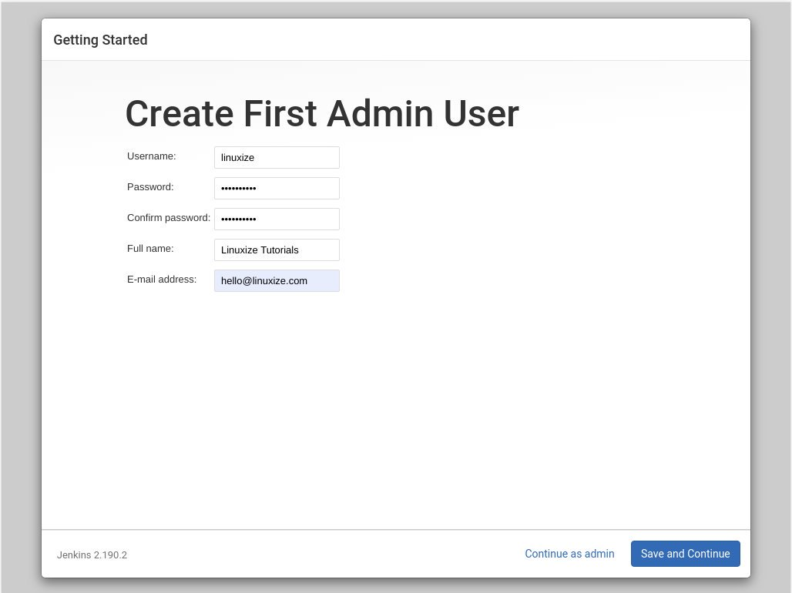
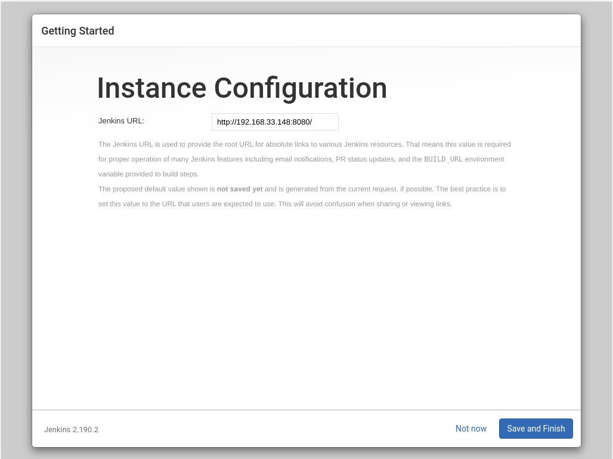
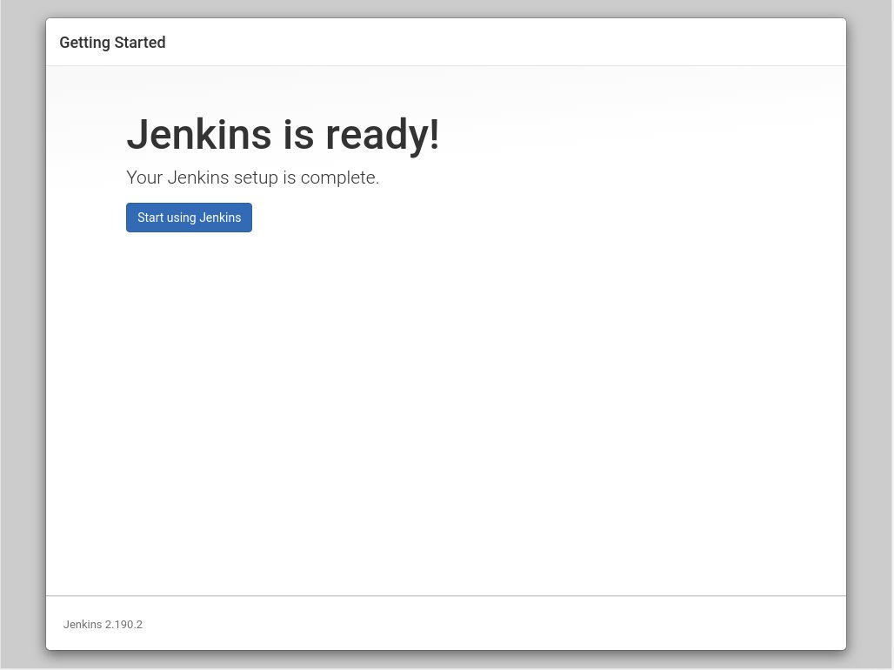
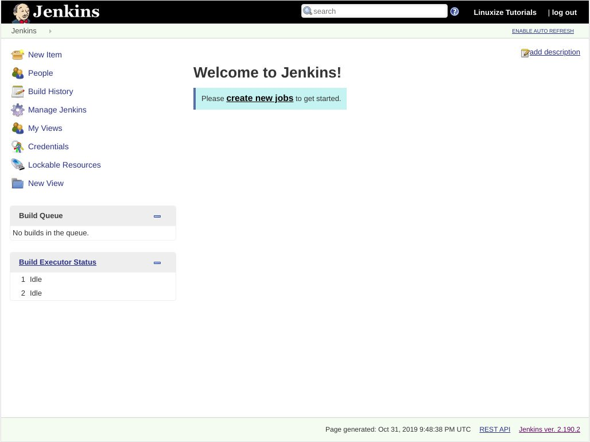

如何在 CentOS 8 上安装 Jenkins
Jenkins 是最流行的开源，基于 Java 的自动化服务器，它使您可以轻松地建立持续集成和持续交付 (CI/CD) 流程。
持续集成 (CI) 是 DevOps 的一种实践，团队成员定期将其代码更改提交到版本控制存储库，然后运行自动构建和测试。持续交付 (CD) 是一系列实践，其中，代码更改会自动生成，测试并部署到生产中。
本教程涵盖了从官方 Jenkins 存储库在 CentOS 8 上安装 Jenkins 的步骤。
安装 Jenkins
以 root 或具有 sudo 特权的用户执行以下步骤在 CentOS 8 上安装 Jenkins ：
-
Jenkins 用 Java 编写的，因此第一步是安装 Java 。 Jenkins 需要 Java 版本8和 11 ，但是某些 Jenkins 插件可能无法与 Java 8 一起编译。
我们将安装 OpenJDK 8 ：
sudo dnf install java-1.8.0-openjdk-devel如果系统上安装了多个 Java 版本，请确保 Java 8 是默认 Java 版本。
-
下一步是启用 Jenkins 存储库。运行以下命令以下载并导入 GPG 密钥：
sudo wget -O /etc/yum.repos.d/jenkins.repo http://pkg.jenkins-ci.org/redhat-stable/jenkins.repo sudo rpm --import https://jenkins-ci.org/redhat/jenkins-ci.org.key -
通过键入以下命令安装最新的 Jenkins 稳定版本：
sudo yum install jenkins安装过程完成后，启动 Jenkins 服务并启用它以在系统引导时启动：
sudo systemctl start jenkins sudo systemctl enable jenkins要检查 Jenkins 是否正在运行，请输入：
systemctl status jenkins输出应如下所示：
Loaded: loaded (/etc/rc.d/init.d/jenkins; generated) Active: active (running) since Thu 2019-10-31 21:31:36 UTC; 3s ago ...
调整防火墙
如果要在受防火墙保护的远程 CentOS 服务器上安装 Jenkins ，则需要打开端口 8080 。
使用以下命令打开必要的端口：
sudo firewall-cmd --permanent --zone=public --add-port=8080/tcp
sudo firewall-cmd --reload
设置 Jenkins
要开始 Jenkins 设置过程，请打开浏览器并输入 http://your_ip_or_domain:8080 ：
http://your_ip_or_domain:8080
将会出现类似以下的屏幕，提示您输入在安装过程中创建的管理员密码：

用 cat 命令在终端上显示密码：
sudo cat /var/lib/jenkins/secrets/initialAdminPassword
你应该看到一个 32 个字符的字母数字密码，如下图所示：
e1bc55ea402640c58970b8db41e4f3bc
从终端复制密码，将其粘贴到 “Administrator password” 字段中，然后单击 “Continue”。

在下一个屏幕上，系统将询问您是否要安装建议的插件或选择要安装的插件。点击 “Install suggested plugins” 框，安装过程就会启动。

安装完成后，将提示您设置第一个管理用户。填写所有必需的信息，然后单击 “Save and Continue”。

在下一页上，安装程序将要求您设置 Jenkins 实例的 URL 。 URL 字段将填充自动生成的 URL 。

要完成设置，请单击 “Save and Finish” 按钮确认 URL 。

最后，单击 “Start using Jenkins” 按钮，您将被重定向到以您在前面的步骤之一中创建的 admin 用户身份登录的 Jenkins 仪表板。

如果您到了这一步，则说明您已经在 CentOS 系统上成功安装了 Jenkins 。
结论
在本教程中，我们向您展示了如何在基于 CentOS/RHEL 的系统上安装并完成 Jenkins 的初始配置。